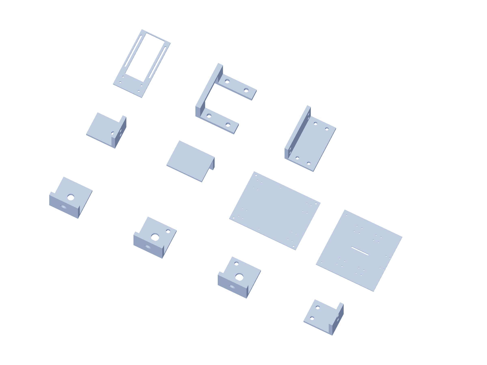

Kit / fabrication17 / 179
Metal kit / 11
6061 aluminum dimensions are finished blank sizes. Bought angles remain angles; shafts, bearings and guide blocks are separate purchased parts.

| Part | Qty | Finished blank / mm |
|---|---|---|
metal-angle-25 | 137 | 25.4 × 25.4 × 3.175 |
guard-thrust-angle-minus | 6 | 25.4 × 25.4 × 3.175 |
guard-thrust-angle-plus | 6 | 25.4 × 25.4 × 3.175 |
linear-stop-angle | 6 | 50.8 × 40 × 6.35 |
installed-Z-jack-angle | 1 | 50.8 × 40 × 6.35 |
proof-gauge-quill-cap | 1 | 50.8 × 70 × 6.35 |
camera-fixed-plate | 2 | 400 × 300 × 6.35 |
camera-carriage-plate | 2 | 300 × 300 × 6.35 |
lens-upright | 2 | 100 × 200 × 6.35 |
camera-rail-stop | 8 | 50.8 × 60 × 38 |
lens-angle | 2 | 50.8 × 80 × 50.8 |
Use gun-positioner-drill-templates.pdf at actual size. The 3D STEP and registered projections govern formed angles and hub faces.